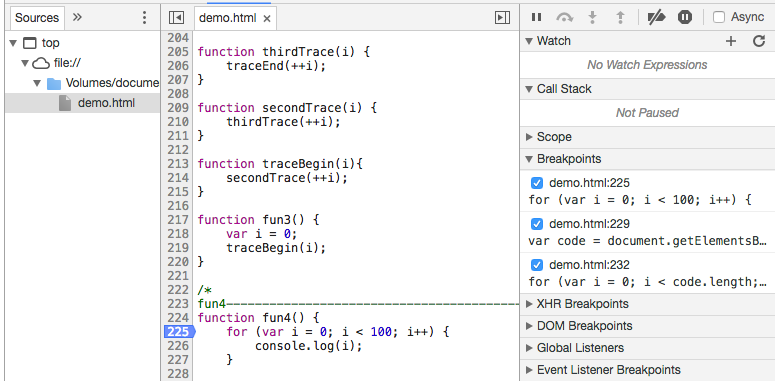

分享人：包鹏亮
目录
1.背景介绍
2.知识剖析
3.常见问题
4.解决方案
5.编码实战
6.扩展思考
7.参考文献
8.更多讨论
什么是console？
Chrome 中 Console 是用于显示 JS和 DOM 对象信息的单独窗口。并且向 JS 中注入1个 console 对象，使用该对象 可以输出信息到 Console 窗口中。在具备调试功能的浏览器上，window 对象中会注册一个名为 console 的成员变量，指代调试工具中的控制台，console 有很多方法，比如我们最常用的log()
普通输出方法，参数可以为任何对象。
常亮 console.log("常量");
变量 console.log(name);
表达式 console.log("名字：" + name);
方法 console.log(document.getElementsByTagName("code"));
2. console.table()
将传入的对象，或数组以表格形式输出
var obj = {
fun: {
name: 'foo',
age: '18'
},
bar: {
name: 'bar',
age: '19'
}
};
var arr = [
['fun', '18'],
['bar', '19']
];
console.log(obj);
console.table(obj);
console.log(arr);
console.table(arr);
3. console.trace()
将传入的对象，或数组以表格形式输出
function traceEnd(i) {
console.log(i);
console.trace();
}
function thirdTrace(i) {
traceEnd(++i);
}
function secondTrace(i) {
thirdTrace(++i);
}
function traceBegin(i){
secondTrace(++i);
}
function fun3() {
var i = 0;
traceBegin(i);
}
4. 其他方法
. 清除控制台 clear()
. 将对象及子元素以目录树列出来 console.dir()
. 条件打印（断言）console.assert()
1. 断点调试
function fun4() {
for (var i = 0; i < 100; i++) {
console.log(i);
}
var code = document.getElementsByTagName("code");
console.log(code);
for (var i = 0; i < code.length; i++) {
code[i].style.color = "red";
}
}
2. sources 选项卡
为什么不提倡用alert进行调试？
一方面，传统的alert调试方式已经渐渐不能满足前端开发的种种场景。而且alert调试方式弹出的调试信息，那个窗口着实不太美观，而且会遮挡部分页面内容，着实有些不太友好。
另一方面，alert的调试信息会中断代码，阻碍页面的继续渲染。这就意味着开发人员调试完成后，必须手动清除这些调试代码，实在有些麻烦。
另外，如果在循环中使用alert，光关闭弹出的窗口就够自己累的了，哈哈！
参考一：你真的了解console吗
参考二：Chrome开发者工具不完全指南
参考三：CSDN中文IT网
大家在调试程序中有什么比较好的方法分享一下？
感谢大家观看
BY : 包鹏亮 |